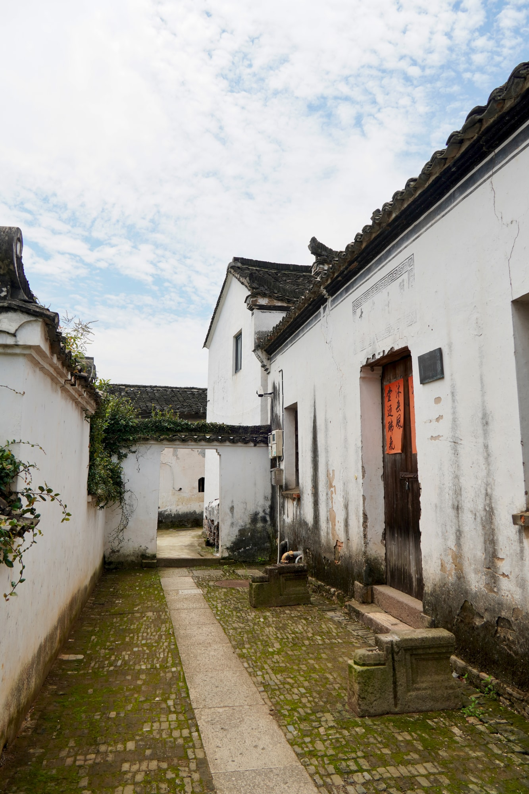

省保传统建筑
竹堂，留在村中的一个名字竹堂
竹堂是省级文物保护单位“新叶村乡土建筑”的组成部分。“竹堂”这一名称让它在村中众多民居之间保有自己的称谓。
01
从屋面来到入口

从较高处望去，竹堂与周围屋舍彼此相连；走近门前，建筑又回到人的步行尺度。一远一近之间，一座有独立名称的老建筑始终处在村落整体之中。

竹堂是省级文物保护单位“新叶村乡土建筑”的组成部分。“竹堂”这一名称让它在村中众多民居之间保有自己的称谓。

从较高处望去，竹堂与周围屋舍彼此相连；走近门前，建筑又回到人的步行尺度。一远一近之间，一座有独立名称的老建筑始终处在村落整体之中。